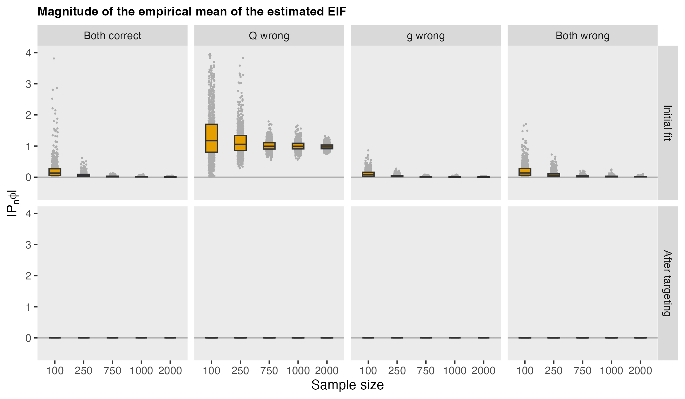
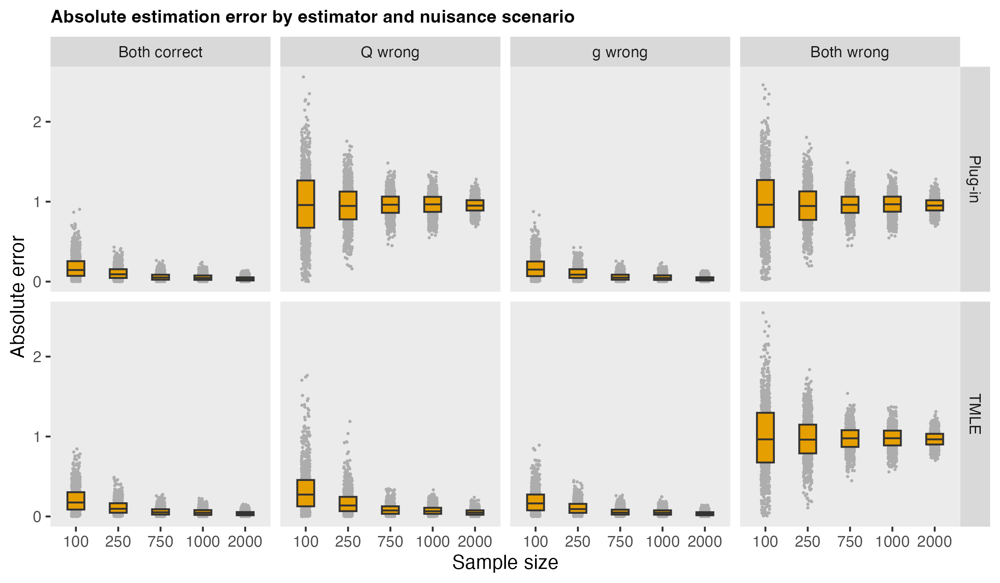

In the previous post, I worked my way through some key elements of TMLE theory as I try to understand how it all works. At its essence, TMLE is focused on getting the efficient influence function (EIF) to behave properly. When that happens, the estimator of the target parameter behaves as if it were based on a random sample from the true data-generating distribution.
Estimating the outcome and treatment (or exposure) models is an important part of constructing the EIF, but they are treated as nuisance components and do not need to be perfectly specified. The targeting step can adjust for errors in these nuisance estimates, often recovering the desired behavior of the EIF and improving the resulting estimate of the target parameter, even when one of the nuisance models is misspecified.
In that previous post, I described how TMLE does not simply try to improve the nuisance models, but instead makes a targeted adjustment so that the empirical mean of the estimated efficient influence function is brought back to zero. In this post, I use simulation to look directly at what targeting changes. In particular, I compare two estimators of the average treatment effect (ATE)—the plug-in estimator and TMLE—with the goal of understanding what the targeting step is doing mechanically and how it affects the final estimate.
I focus on two questions. First, how far is the empirical mean of the estimated influence function from zero before and after targeting? Second, how do the plug-in and TMLE estimates of the ATE behave across different nuisance-model scenarios?
For a binary treatment \(A\), covariates \(X\), and outcome \(Y\), define the conditional outcome regression and propensity score as \[ Q_a(X)=E[Y∣A=a,X],\ \ \ g(X)=P(A=1∣X). \] Our target is the average treatment effect (represented as \(\psi\)): \[ \psi_0 = E\big[Y(1)−Y(0)\big]. \] Under the usual identification assumptions, this can be written as \[ \psi(P)=E_P[Q_1(X)−Q_0(X)]. \] The efficient influence function for the ATE is \[ \phi_P(Z) = \big(Q_1(X)−Q_0(X)−\psi(P)\big ) + \frac{A}{g(X)}\big(Y − Q_1(X)) − \frac{1−A}{1−g(X)}\big(Y−Q_0(X)\big). \] If we knew the true nuisance functions, this quantity would be centered under the true distribution, and its empirical mean would fluctuate around zero because of sampling variability. In practice, of course, we plug in estimated nuisance functions, and then the empirical mean need not be close to zero at all. TMLE updates the initial outcome regression just enough to remove that empirical imbalance.
The simulation below is designed to make that step visible.
To keep the story aligned with the previous simulation post, I use the same data-generating process. Covariates influence both treatment assignment and outcome, so there is genuine confounding. The true ATE is constant and equal to \(\tau\).
knitr::opts_chunk$set(
eval = FALSE
)library(simstudy)
library(data.table)
library(ggplot2)gen_dgp <- function(n, tau = 5) {
def <-
defData(varname = "x1", formula = 0.5, dist = "binary") |>
defData(varname = "x2", formula = 0, variance = 1, dist = "normal") |>
defData(
varname = "a",
formula = "-0.2 + 0.8 * x1 + 0.6 * x2",
dist = "binary",
link = "logit"
) |>
defData(
varname = "y",
formula = "..tau * a + 1.0 * x1 + 1.0 * x2 + 1.5 * x1 * x2",
variance = 1,
dist = "normal"
)
genData(n, def)[]
}To see how the estimators behave under different modeling assumptions, I consider four scenarios:
The nuisance fitting functions vary under each scenario:
fit_nuisance <- function(dt, scenario) {
if (scenario %in% c("both_correct", "g_wrong")) {
Q_fit <- lm(y ~ a + x1 + x2 + x1:x2, data = dt)
} else {
Q_fit <- lm(y ~ a + x1, data = dt)
}
if (scenario %in% c("both_correct", "Q_wrong")) {
g_fit <- glm(a ~ x1 + x2, family = binomial(), data = dt)
} else {
g_fit <- glm(a ~ x1, family = binomial(), data = dt)
}
list(Q_fit = Q_fit, g_fit = g_fit)
}The helper functions for prediction are straightforward:
predict_Q <- function(Q_fit, dt, a_val) {
nd <- copy(dt)
nd[, a := a_val]
as.numeric(predict(Q_fit, newdata = nd))
}
predict_g <- function(g_fit, dt) {
p <- as.numeric(predict(g_fit, newdata = dt, type = "response"))
pmin(pmax(p, 0.01), 0.99)
}Here is a quick recap of the estimators. The simplest estimator plugs the initial outcome regression directly into the identifying functional: \[ \hat{\psi}^0 =\frac{1}{n}\sum_{i=1}^n \big( \hat{Q}_1^0(X_i) − \hat{Q}_0^0(X_i) \big). \] This estimator depends heavily on the quality of the outcome model.
TMLE begins from the same initial nuisance fits but then updates the outcome regression along a one-dimensional fluctuation model. For a continuous outcome, the update is \[ \hat{Q}^{\epsilon}(A,X) = \hat{Q}^0(A,X) + \epsilon H_{\hat{g}}(A,X), \] where the clever covariate is \[ H_{\hat{g}}(A,X) = \frac{A}{\hat{g}(X)} − \frac{1−A}{1−\hat{g}(X)}. \] The coefficient \(\epsilon\) is chosen so that the empirical mean of the weighted residual is zero. After updating the regression, the TMLE estimate is the plug-in estimator based on the targeted regression: \[ \hat{\psi}^* = \frac{1}{n} \sum_{i=1}^n \big( \hat{Q}_1^∗(X_i) − \hat{Q}_0^∗(X_i)\big). \]
This helper function builds the efficient influence function once the nuisance quantities and parameter estimate are available:
phi_ate <- function(dt, Q1, Q0, g, psi) {
A <- dt$a
Y <- dt$y
(Q1 - Q0 - psi) + A / g * (Y - Q1) - (1 - A) / (1 - g) * (Y - Q0)
}For the Gaussian outcome used here, the fluctuation step can be fit by ordinary least squares with an offset. This gives us both the updated regression and the empirical mean of the targeted influence function.
tmle_update_gaussian <- function(dx, Q_fit, g_fit) {
dt <- copy(dx)
dt[, QAW := predict_Q(Q_fit, dt, dt$a)]
dt[, Q1 := predict_Q(Q_fit, dt, 1)]
dt[, Q0 := predict_Q(Q_fit, dt, 0)]
dt[, g := predict_g(g_fit, dt)]
dt[, H := a / g - (1 - a) / (1 - g)]
# Estimate fluctuation parameter on this data set unless supplied
fluc_fit <- lm(y ~ -1 + offset(QAW) + H, data = dt)
eps <- coef(fluc_fit)[["H"]]
# Targeted updates
dt[, QAW_star := QAW + eps * H]
dt[, Q1_star := Q1 + eps / g]
dt[, Q0_star := Q0 - eps / (1 - g)]
list(
eps = eps,
Q1 = dt$Q1,
Q0 = dt$Q0,
g = dt$g,
Q1_star = dt$Q1_star,
Q0_star = dt$Q0_star
)
}For each simulated data set and each nuisance modeling scenario, I keep track of:
Here is the function that does that using 2-fold cross-fitting:
s_estimate <- function(dx, scenario, tau, n, nfolds = 2) {
dt <- copy(dx)
dt[, fold := sample(rep(1:nfolds, length.out = .N))]
# Storage for fold-specific population diagnostics
eps_vec <- numeric(nfolds)
for (k in 1:nfolds) {
train <- dt[fold != k]
test <- copy(dt[fold == k])
fits <- fit_nuisance(train, scenario)
# Sample: fit on train, target/evaluate on held-out test fold
tmle_k <- tmle_update_gaussian(test, fits$Q_fit, fits$g_fit)
eps_vec[k] <- tmle_k$eps
# Write held-out predictions back into main sample object
dt[fold == k, `:=`(
Q1 = tmle_k$Q1,
Q0 = tmle_k$Q0,
g = tmle_k$g,
Q1_star = tmle_k$Q1_star,
Q0_star = tmle_k$Q0_star
)]
}
# Cross-fitted sample estimators
psi_plugin <- mean(dt$Q1 - dt$Q0)
psi_tmle <- mean(dt$Q1_star - dt$Q0_star)
pn_phi_plugin <- mean(
phi_ate(
dt,
Q1 = dt$Q1,
Q0 = dt$Q0,
g = dt$g,
psi = psi_plugin
)
)
pn_phi_tmle <- mean(
phi_ate(
dt,
Q1 = dt$Q1_star,
Q0 = dt$Q0_star,
g = dt$g,
psi = psi_tmle
)
)
data.table(
tau = tau,
n = n,
scenario = scenario,
psi_true = tau,
psi_plugin = psi_plugin,
psi_tmle = psi_tmle,
abs_pn_phi_plugin = abs(pn_phi_plugin),
abs_pn_phi_tmle = abs(pn_phi_tmle),
abs_err_plugin = abs(psi_plugin - tau),
abs_err_tmle = abs(psi_tmle - tau),
eps = mean(eps_vec)
)
}For each generated data set (based on a specific sample size), I fit four models, one for each set of nuisance model specification scenarios:
s_simulate <- function(n, tau, scenarios) {
dd <- gen_dgp(n, tau)
rbindlist(lapply(scenarios, function(s) s_estimate(dd, s, tau, n)))
}I create 1000 data sets for each possible sample size ranging from 100 to 2000:
set.seed(2026)
tau <- 5
ns = rep(c(100, 250, 750, 1000, 2000), each = 1000)
scenarios <- c("both_correct", "Q_wrong", "g_wrong", "both_wrong")
res <- rbindlist(
lapply(ns, function(x) s_simulate(x, tau, scenarios))
)What I expect to see here is the central mechanical fact of TMLE. Before targeting, the empirical mean of the estimated EIF is often noticeably away from zero, especially in smaller samples and under misspecification. After targeting, that imbalance should collapse to essentially zero in every scenario, because the fluctuation step is constructed to make that happen.
This is the most literal sense in which TMLE forces the target to behave.

Of course, the point is not merely to make an estimating equation look tidy. The real question is whether this changes the behavior of the parameter estimate itself.

The main patterns I expect are familiar, but now they can be tied directly to the targeting step.
When both nuisance models are correctly specified, all three estimators should behave well, though TMLE and AIPW may still outperform the raw plug-in estimator in smaller samples.
When the outcome model is wrong but the propensity model is correct, the plug-in estimator should typically struggle because it depends directly on the misspecified outcome regression. In contrast, AIPW and TMLE should remain much more stable because they use the propensity-based residual correction.
When the propensity model is wrong but the outcome model is correct, the plug-in estimator may already do fairly well, and AIPW and TMLE should also remain consistent. This is one way the familiar double-robustness story becomes visible.
When both nuisance models are wrong, none of these estimators is guaranteed to behave well. That is also worth seeing directly, because it keeps the simulation from becoming a fairy tale about TMLE solving everything.
One aspect of the simulation that interests me most is that the targeting step may have a meaningful effect on the parameter estimate even though it does not dramatically change the outcome regression as a prediction model.
That is a useful reminder of the logic behind TMLE. The goal is not primarily to make \(\hat Q\) predict \(Y\) better in some global sense. The goal is to make the parameter estimate obey the influence-function equation that governs its asymptotic behavior. A small targeted change in \(\hat Q\) can therefore matter a lot for \(\hat\psi\), even if it barely matters for overall prediction error.
If the simulation behaves as expected, I think the main lesson is this: TMLE is not mysterious because it uses a clever covariate or because it performs a last-minute update to the regression. The important point is that the update is chosen to solve a very specific problem. It removes the empirical imbalance in the estimated efficient influence function, so that the final estimate behaves more like the ideal influence-function approximation described in the earlier posts.
In that sense, targeting is not a generic model-improvement step. It is a parameter-focused correction.
The earlier post argued that TMLE works by slightly adjusting the nuisance fit until the empirical influence-function equation is brought back into balance. This simulation is meant to make that claim visible. Before targeting, the estimated EIF can be noticeably off center. After targeting, it is effectively zero by construction. And once that happens, the estimator often behaves much more like the asymptotic story says it should.
That, at least for me, makes the targeting step feel much less magical. It is not forcing the nuisance models to be correct. It is forcing the target parameter to obey the equation that makes influence-function-based inference work.
Reference
Van der Laan, Mark J., and Sherri Rose. Targeted learning: causal inference for observational and experimental data. Vol. 4. New York: Springer, 2011.
Support
This work was supported by the National Institute on Aging (NIA) of the National Institutes of Health under Award Number U54AG063546, which funds the NIA IMbedded Pragmatic Alzheimer’s Disease and AD-Related Dementias Clinical Trials Collaboratory (NIA IMPACT Collaboratory ). The author, a member of the Design and Statistics Core, was the sole writer of this blog post and has no conflicts. The content is solely the responsibility of the author and does not necessarily represent the official views of the National Institutes of Health.